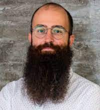
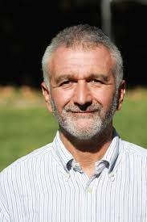
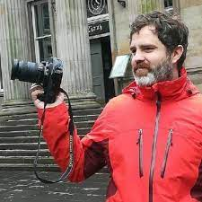
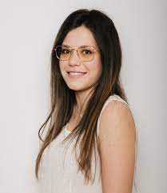
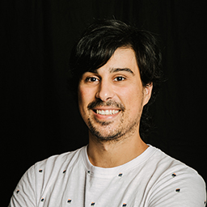

Publications
Journals
- Macenski, S., Singh, S., Martín, F. et al. Regulated pure pursuit for robot path tracking. Auton Robot (2023). https://doi.org/10.1007/s10514-023-10097-6
- Riego, V., Sánchez, L., Fernández, L.et al. A non-stressful vision-based method for weighing live lambs. Logic Journal of IGPL, 2024 DOI: 10.1093/jigpal/jzae059
Conferences
- Riego, V., González, M.A., Sánchez-González, L. et al. "A perception skill for herding with a 4-legged robot", in Sixth Iberian Robotics Conference (ROBOT), 2023, Coimbra, Portugal (22-24 November 2023).
- Rodríguez-Lera, F.J., Sánchez-González, L., Guerrero-Higueras, A.M. et al. "SELF-AIR: Supporting Extensive Livestock Farming with the use of Autonomous Intelligent Robots ", in 5th Euro-Mediterranean Conference for Environmental Integration (EMCEI), 2023, Rende (Cosenza), Italy (2-5 October 2023).
- Riego, Virginia; García-Sierra, Juan F.; Sánchez-González, Lidia. "Adapting YOLOv8 as a vision-based animal detection system to facilitate herding", in 18th International Conference on Hybrid Artificial Intelligence Systems (HAIS), 2023, Salamanca, Spain (5-7 September 2023).
- Sánchez-González, Lidia. "Aplicaciones de la robótica y la visión a la ganadería extensiva", Presentaciones de los grupos que participan en el grupo de interés de SARTECO, CAPAP-H (Red de Computación de Altas Prestaciones sobre Arquitecturas Paralelas Heterogéneas), 2023, Almería, Spain (1-3 February 2023).
- Gil, María; Riego, Virginia; Sánchez-González, Lidia. "AnimApp, a mobile app to detect animals in natural environments", in 5th International Conference on Applications of Intelligent Systems (APPIS), 2023, Las Palmas de Gran Canaria, Spain (23-27 January 2023). Zenodo https://doi.org/10.5281/zenodo.8072130
Datasets
- Yang, X., Jové, B., Sánchez-González, L. Rodríguez-Lera, F.J. et al.Dataset for Herding and Predator Detection with the Use of Robots. DOI: 10.57967/hf/2059 (2024). DORIS Dataset at Huggingface
Workshops
- Fernández C., Gutiérrez, A., Álvarez-Aparicio, C., et al."Robot-dogs shepherding a herd: Preliminary study of animal-robot interaction", XXI Symposium International Wild Animals Vigilance Euromediterranean Society (WAVES) , 2023, Zamora, Spain (29 September - 1 October 2023)
- Riego V., González-Santamarta, M.A., Matellán, V., et al."Overcoming perception system challenges for herding with a 4-legged robot", XXI Symposium International Wild Animals Vigilance Euromediterranean Society (WAVES) , 2023, Zamora, Spain (29 September - 1 October 2023)
Autumn School
International Autumn School on AI and Robotics for Sustainable Agricultural Systems (SAIRSAS 2023)
📅 14 - 16 November, 2023
📍 Universidad de León
The team
Lidia Sánchez

Francisco J. Rodríguez
Camino Fernández
Vicente Matellán
Manuel Castejón

José M. Gonzalo
Ángel M. Guerrero
Laura Fernández
Miguel Á. Conde
Juan F. García
Gonzalo Esteban

Francisco Martín

Claudia Álvarez
Virginia Riego

Alexis Gutiérrez
Miguel Á. González
Adrián Campazas
Ignacio Crespo
José M. Guerrero
Julio Vega
Alberto Gomez
Bence Ferdinandy
Ádám Miklósi
Grant TED2021-132356B-I00 funded by:
Partners